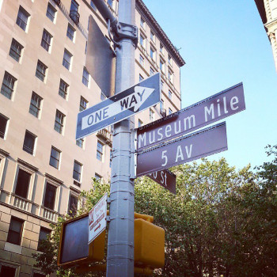

Restaurants in East Harlem are pletiful and diverse. My favorites are those that pack a punch.
On the corner of 103st and Lexington, you will find the "El Aguila" restaurant. Though people may shy away from this spot becuase it is a chain, give it a try! The burritos are fresh and delicious!
Image from https://www.timeout.com/newyork/restaurants/el-aguila
On 107 and Lexington Avenue is the East Harlem Bottling company is a cute neighborhood bar and dinner spot. The menu is long enough for everyone to find something that they are interested in eating. Here, a bartender named Max will serve you the brew on tap, or your favorite cocktail.
Image from https://www.yelp.com/biz/east-harlem-bottling-co-new-york-4
My favorite Thai restaurant is Pro Thai.The food here is spicy and tasty and at a good price. If you are vegetarian there are plenty of options. I reccomend the spicy basil fried rice.
Image from https://nz.yelp.com/biz/pro-thai-new-york?start=80
Near East Harlem is Museum Mile. The museums thar are found here are "El Museo del Barrio," "Museum of the City of New York," "Jewish Museum," "Cooper-Hewitt National Museum of Design," "National Academy Museum and School of Fine Arts," "Solomon R. Guggenheim Musum," "Metropolitan Museum of Art," and the "Goethe House German Cultural Center." Museums here are great for tourists, and New Yorkers looking for something new in the city. A visitor could spend a day just ducking in and out of museums in the area.
Image from https://ottoobrandartivism.org/2015/06/11/nycs-museum-mile-festival-2015/
If you stroll to Central park on 106th and 5th Ave you will find what is nothing less than an oasis in the middle of the city. Here the Central Park Conservatory Gardens and the Harlem Meer lake are a simultaneously lively and peacful. During the day, dog walkers, park strollers, and families walk around the lake to take in the view of the city and park all around them. It really livens up in the evening thuogh! People sing music, play drums, dance in the park, throw bbqs and parties. And if you are REALLY lucky, you may see a photoshoot for a wedding (or someone taking their tinder profile to the next level).
Image from http://www.centralparktoursnyc.com/conservatory-garden/
East Harlem is unique because while it is still a part of Manhattan, it is still a family neighborhood. In the summer, children play on the streets outside, families sit around for meals and play music on their doorsteps. You would never believe that this is all part of the busy New York City that we see in movies and T.V.
Transportation to East Harlem is via stops on the 6 train. Take the 6 to stops 103, 110, 116 or take the 4,5,6 trains to 125th street. By car, from the Bronxs via I278 W, from Brooklyn, via FDR parkway, from Queens, via Grand Central Parkway, from New Jersey, via I95N